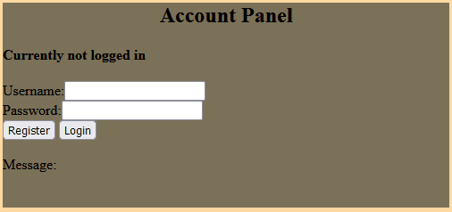

Character Customisation Website
I was given the task of creating a website where users can create an account, log into it, create a character, and customise it.
The end-goal is to allow this website to be an interface for the in-game
characters.
Overview
Account creation

This menu lets you create an account.
When you're logged in, you can create a new character.
It's owned by you and only you can then edit that character.
Account database

Accounts are saved into a MongoDB database.
The owned field is for tracking which of the characters this user has created.
Rather than storing the password as clear text, I use MD5 algorithm to hash the passwords client-side, before they're sent.
This prevents anyone other than the user finding out the original text.
Character customisation

This is the character customizer itself.
You can:
- set the name of the character
- toggle whether he's wearing the pants & chest-plate
- change the color of his skin, pants, & chest-plate
After making your changes, you can send them to the server by pressing 'Update'
This requires you to be logged-in to the account that owns the character
After you update a character, all of the connected users have their page forcefully refresh- this causes a re-connect, and the re-connect prompts a re-send of all of the character information,
updating the character for all users
The number on the top right is the character's index, this is the thing used to keep track of ownership